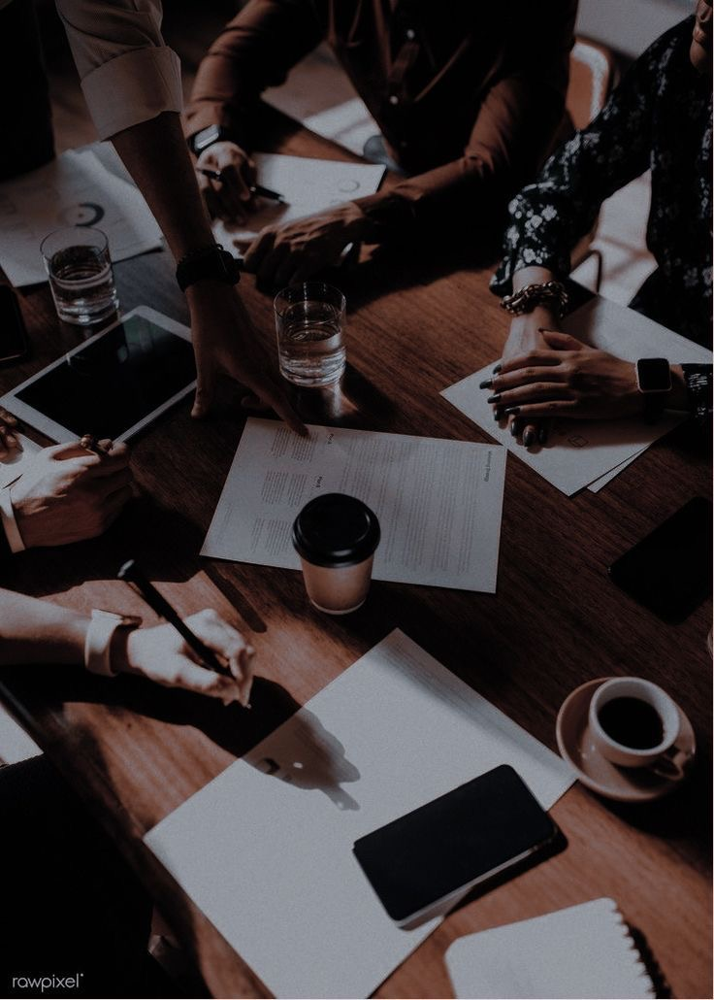
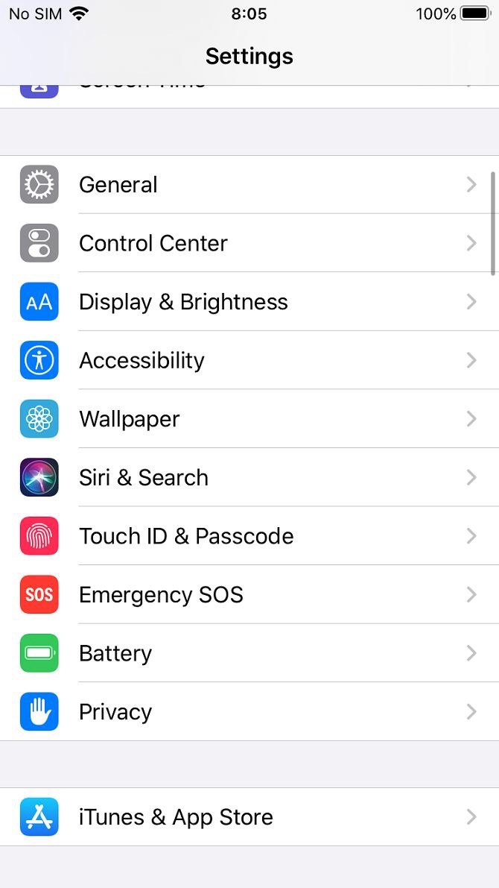

| Date | Événement historique | Impact et contribution |
|---|---|---|
| 20 juillet 2013 | Création de l'Association des Aveugles pour le Développement en RDC (ASAD) | Première organisation dédiée au développement des aveugles en RDC |
| 03 décembre | Journée Mondiale des Personnes Handicapées | Promotion de l'égalité sociale entre les humains malgré nos différences |
| 1620 | Publication du premier livre sur l'éducation des sourds par Juan Pablo Bonet | Création de la base de l'apprentissage pour les sourds dans le monde |
| 1756 | Création de la première véritable école pour sourds par l'Abbé de l'Épée | Fondation de l'éducation spécialisée pour les personnes sourdes |
| 1829 | Invention de l'écriture BRAILLE par Louis Braille | Révolution de l'accès à l'éducation pour les personnes aveugles |
| 1904 | Helen Keller obtient son diplôme de Radcliffe College | Inspiration mondiale pour les personnes avec handicaps multiples |
| 1920 | Lois prévoyant des dispositions pour les infirmes de guerre | Prise en charge étatique des victimes de guerre handicapées |
| 1924 | Première compétition internationale de sport pour malentendants à Paris | Début du sport adapté comme outil d'inclusion |
| 1925 | Discours historique de Helen Keller au Lions Clubs International | Sensibilisation internationale aux droits des personnes handicapées |
| 1948 | Organisation des premiers Jeux de Stoke Mandeville par Ludwig Guttman | Naissance du mouvement paralympique moderne |
| 1975 | Instauration de la Journée d'Helen Keller (1er juin) | Célébration annuelle des avancées pour les personnes handicapées |
| 1982 | Création de la Fondation Handicap International | Émergence d'une ONG majeure pour la défense des droits des handicapés |
| 1988 | Intégration des Jeux Paralympiques par le Comité Olympique | Reconnaissance officielle du sport paralympique au plus haut niveau |